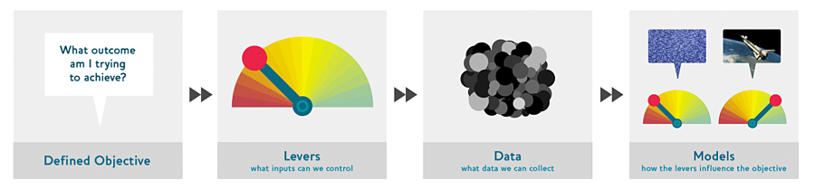

import PIL
from fastai.data.all import *
from fastai.vision.all import *A Journey Through Fastbook (AJTFB) - Chapter 2: Doing Deep Learning
fastai
fastbook
The second in a weekly-ish series where I revisit the fast.ai book, "Deep Learning for Coders with fastai & PyTorch", and provide commentary on the bits that jumped out to me chapter by chapter. So without further adieu, let’s go!
Other posts in this series:
A Journey Through Fastbook (AJTFB) - Chapter 1
A Journey Through Fastbook (AJTFB) - Chapter 3
A Journey Through Fastbook (AJTFB) - Chapter 4
A Journey Through Fastbook (AJTFB) - Chapter 5
A Journey Through Fastbook (AJTFB) - Chapter 6a
A Journey Through Fastbook (AJTFB) - Chapter 6b
A Journey Through Fastbook (AJTFB) - Chapter 7
A Journey Through Fastbook (AJTFB) - Chapter 8
A Journey Through Fastbook (AJTFB) - Chapter 9
Starting Your Project
Things to think about when deciding on project feasibility
“When selecting a project, the most important consideration is data availability.” If you don’t have enough quality data … good luck :)
Tip
Consider that data augmentation can alleviate both the need for more manual labelling and also protect you from problems with out-of-domain data (e.g. when unexpected image types arise in the data when the model is being used in production) by synthetically creating more data likely to be seen that may not be in your dataset as is.
Note
“… iterate from end to end in your project; don’t spend months fine-tuning your model, or polishing the perfect GUI, or labeling the perfect dataset”
This is good advice for any software project …fail early and fail often. If you don’t, you’re likely to only uncover critical problems much later than you would have before, and even worse, you’re likely to not produce anything at all! In the world of deep learning there are a number of tools, that while helpful, can really get you so bogged down that you never deploy something usable (e.g., experiment tracking tools, hyperparameter optimization libraries, etc…).
Also, remember that getting something in production is a different task from winning a kaggle competition, where the later may require use of some of those aforementioned tools and the ensembling of dozens of models. For production, something better than human is often good enough to get out there and through refactoring, improve.
The Drivetrain Approach

Four Steps
Step 1: Define your objective(s)
It’s amazing how in my 20+ years as a developer, how rare it is that a customer is able to clearly define what they want! In my experience, more than not, it is the developers that end up defining the goals. Not having a clear objective is likely to waste time, energy, and money to produce something that won’t even see the light of day. You can’t gauge the completion or quality of any software project without clear objective(s).
Ex.1: Show most relevant search results.
Ex.2: Drive additional sales by recommending to customers items to purchase they otherwise wouldn’t
Step 2: What actions can you take to achieve those objective(s)?
What things can make your goals a reality. Pretty simple.
Ex.1: Ranking the search results will help show the most relevants ones first.
Ex.2: Ranking the recommendations will help.
Step 3: What data is needed to take those actions?
If you don’t have the data, you’ll need to get it … because the data pulls the levers which get you closer to your objective(s).
Ex.1: Seeing what how pages linked to other pages.
Ex.2: Collecting data on what customers purchased, what was recommended, and what they did with that info.
Step 4: Build models
Only once you have the data and know what actions you want to be able to take based on the information within it, do you being modeling … first, defining what models you can even build with that data and second, what data you need to collect for models you can’t.
Ex.1: A model that takes the page relation data and predicts a ranking given a query.
Ex.2: Two models that predict the purchasing proabilities conditional on seeing or not seeing a recommendation.
How to Avoid Disaster
Important
Your model is only as good as the data it was trained on
Two problems to watch out for:
- out-of-domain data: “data that our model sees in production that is very different to what it saw during training.
- domain shift: “whereby the type of data that our model sees changes over time.”
Mitigation steps:

“Where possible, the first step is to use an entirely manual process with your model running in parallel and not being used to directly drive any actions.”
“The second step is to try and limit the scope of the model.”
“The third step is to gradually increase the scope of your rollout.”
Tip
“Try to think about all the ways in which your system could go wrong, and then think about what measure or report or picture could reflect that problem, and ensure that your regular reporting includes that information.”
Note
Defining good validation and tests sets are part of the solution. See my “How to create good validation and test sets” for more details.
Getting help
A few of ways …
# method signature only
download_images?# full source of method
download_images??# get link to fastai docs
doc(download_images)You can also use pdb.set_trace (in code) or %debug(in a new cell following the one with the error) to step through your code. I use the former all the time … its a great way to debug and also learn what the code is doing and why. For example, I use it to look at the shape of things as the travel through and out of different layers in my NNs.
import pdb
def div_by_zero():
pdb.set_trace()
x = 1/0
print('here')
# uncomment this to see what I'm talking about ...
# div_by_zero()Getting and cleaning your images
- Use
download_imageslisted as URLs in a text fileurlsto download the actual images locally.
- Get the file path to the images via
get_image_filesin anLobject.
- Get rid of the corrupt images using
verify_imagesandPath.unlink.
path = Path('bears/grizzly')
download_images(path, urls=image_urls.txt)
file_paths = get_image_files(path)
failed = verify_images(file_paths)
failed.map(Path.unlink)Notice how L’s map method is used to apply the Path.unlink function to each item in-place.
DataBlock API Basics
The DataBlock API represents fastai’s high-level approach for building DataLoaders from your raw data sources. It is a reusable blueprint for how data is used both during model training and at inference time, and along with the fastai callback system, it represents one of the core pieces of the fastai framework.
“… a DataBlock object … is like a template for creating a DataLoaders object”
“A DataLoader is a class that provides batches of a few items at a time to the GPU”
Defining your “blueprint” using the DataBlock API
There are four things you need to specify to make your data usable for training (e.g., to build at minimum a training and validation DataLoader).
- What kind of data you are working with
- How to get the data
- How to label the data
- How to create a validation set
Here’s an example of how this is done with the DataBlock API:
d_block = DataBlock(
blocks=(ImageBlock, CategoryBlock), #=> our independent and dependent variable datatypes
get_items=get_image_files, #=> how to get our data
splitter=RandomSplitter(valid_pct=0.2, seed=42), #=> how to create the validation set
get_y=parent_label, #=> how to label our data
item_tfms=Resize(128)) #=> code that runs against each item as it is fetched
Tip
Use the seed argument to ensure you get the same training/validation set each time you run that code; else you won’t be able to know if, as you change hyperparameter values, your model performance changed because of those values and/or because of difference in your training/validation sets!
Note
To ensure reproducibility in your fastai training, follow the tips/tricks laid out in the Reproducibility: Where is the randomness coming in? forum post.
Using your “blueprint” to build your DataLoaders
Once you’ve defined your blueprint for how to get your modelable data (i.e., your DataLoaders), you need to pass it the “actual source” of your data, which can be a path or a DataFrame or whatever.
dls = d_block.dataloaders(path)
Note
Use dls.show_batch(...) or dls.valid.show_batch(...) to visualize your training/validation data.
Transforms
The DataBlock API relies heavily on the use of fastai transforms. They are used in the blocks you see above as well as inline, as you’ll see below.
What is a “Transform”?
A Transform contains code that is applied automatically during training.
What kinds of transforms are there?
There are two kinds of transforms:
Item Transforms: Applied to each individual item in your dataset, they are applied to an item from your dataset when it is fetched.
Note
Use the item_tfms argument to define your batch transforms. It is more technically correct to think of them as your after batch transforms since that is whey they are applied
Batch Transforms: Applied to a batch of items using the GPU, they are applied to a collection of items on the GPU after they have been collated into the same shape.
Note
Use the batch_tfms argument to define your batch transforms. It is more technically correct to think of them as your after batch transforms since that is whey they are applied
An example:
d_block = d_block.new(item_tfms=RandomResizedCrop(128, min_scale=0.3), batch_tfms=aug_transforms(mult=2))
Note
aug_transforms are “a standard set of augmentations that we have found work pretty well”
When should I use an item transform?
TODO
When should I use a batch transform?
Data augmentation
Data augmentation transorms (e.g., rotation, flipping, perspective warping, brightness changes, contrast changes, etc…) are defined as batch transforms and run on the GPU.
Tips & Tricks
1. Changing your transforms without having to redefine your DataBlock from scratch
You can change the transforms in your DataBlock by reusing an existing DataBlock via d_block.new.
d_block = d_block.new(item_tfms=Resize(128, ResizeMethod.squish))
dls = d_block.dataloaders(path)
...
d_block = d_block.new(item_tfms=Resize(128, ResizeMethod.Pad, pad_mode='zeroes'))
dls = d_block.dataloaders(path)
...How to train an image classification model with the high-level API
Step 1: Get your data
We can grab all kinda of useful datasets via the fast.ai Datasets for various tasks and data types (e.g., images, text, etc…). In this example we’ll work with the Imagnette dataset, a “subset of 10 easily classified classes from Imagenet.”
Tip
Working with a representative subset of your full dataset is recommended for experimentation and as a means to verify your data prep and model training.
We’ll use untar_data to both download and decompress the dataset. It will return a Pathlib object pointing to where the data has been downloaded
raw_data_path = untar_data(URLs.IMAGENETTE)
print(raw_data_path)
raw_data_path.ls()We can use get_image_files() to grab all the image filepaths in the training set. This method takes a path as an argument and recursively grabs all the images in that path by default.
We’ll need to know how to infer the class for each image and this can be done by looking at one or more of the actual image filepaths.
files = get_image_files(raw_data_path/'train')files[0]Here we can see that the convention followed for this dataset is having the class Id we want to predict in its parent folder, while each image’s unique name is the class_id followed by a unique identifier: {class_id}/{class_id}_{unique_id}.JPEG.
We can validate this by ensure we see 10 parent folders …
(raw_data_path/'train').ls()We can even look at one or more of the images using the PIL package
img = PIL.Image.open(files[0])
imgStep 2: Build your DataBlock
The objective here is to ultimately be able to build DataLoaders you can feed into your model. There are a variety of ways to do this but the recommended go to is to use the mid-level DataBlock API if you can. A DataBlock represents a blueprint for building DataLoaders from your raw data, whereas the DataLoaders are what allow us to feed our examples into our model a mini-batch (a few) at a time.
dblock = DataBlock(
blocks=(ImageBlock, CategoryBlock), # tell the block what are INPUTS/TARGETS are (images and a category/class here)
get_items=get_image_files, # tell the block HOW TO GET THE DATA (here its files but could also be rows in a .csv, etc...)
splitter=RandomSplitter(valid_pct=0.2, seed=42), # tell the block HOW TO BUILD THE VALIDATION SET (here we just randomly select 20% data)
get_y=parent_label, # tell the block WHERE TO GET OUR LABELS (here from the parent folder)
item_tfms=Resize(128) # tell the block things WE WANT DONE EACH TIME WE GRAB AN ITEM from the dataset
)If you’re unsure what any of these classes or methods do, don’t forget about the ?? syntax you can use in notebooks. For example …
ImageBlock??
Note
We specify Resize(128) as an item transform because ultimately we’ll feed the data into our model a mini-batch at a time, and in order to take advantage of the GPU and tensor operations that items we feed in need to be the same size.
“Item transforms are pieces of code that run on each individual item, whether it be an image, category, or so forth.”
dls = dblock.dataloaders(raw_data_path)We implement our blueprint by passing the path to the image files into the DataBlock.dataloaders() method. Whatever we pass in as an argument here, gets passed to the function we specified in get_items above (which isget_image_files in this case). While iterating over each image, get_y will be used to grab the label of the image and our two blocks, ImageBlock and CategoryBlock will provide both the pre and post-processing necessary to work with our images and classes. Finally, our splitter will randomly take 20% of the dataset and set it aside for our validation set.
Tip
You want to ensure you get the same validation set each time so you can meaningfully assess the performance of your model(s) as you tweak things. You do this by assigning a seed. If you don’t do this, you won’t know if your model’s performance is due to it seeing different images in the validation set or because of change you’ve made in your hyperparameters, model architecture, etc…
Each time we grab an image, regardless of the size, from the dataset, we resize it as a 128x128 tensor.
dls.show_batch(max_n=4, nrows=1)We can use the DataBlock.new() method to modify only parts of our DataBlock defined above, and so create a new instance. Here for example, we can change how the Resize transform resizes images so that it randomly crops the image, keeping at least 30% of the image each time.
By default, this method crops the images to fit a square (but as you can see here we can also have fastai pad the images with zeroes, squish, or stretch them.).
dblock2 = dblock.new(item_tfms=RandomResizedCrop(128, min_scale=0.2))
dls = dblock2.dataloaders(raw_data_path)dls.valid.show_batch(max_n=4, nrows=1)
Tip
When dealing with data augmentation, its often helpful to see how a single example is augmented.
dls.train.show_batch(max_n=4, nrows=1, unique=True)Using RandomResizedCrop allows ” our model can learn to focus on, and recognize, different features in our images. It also reflects how images work in the real world: different photos of the same thing may be framed in slightly different ways.”
Tip
“…training the neural network with examples of images where the objects are in slightly different places and slightly different sizes helps it to understand the basic concept of what an object is, and how it can be represented in an image.”
We can, and should, also use data augmentation to create “random variations” that are representative of what our model will see in the wild. “Examples of common data augmentation techniques for images are rotation, flipping, perspective warping, brightness changes and contrast changes.”
For “natural photos”, fastai provides the aug_tranforms() method that have proven to work well in general.
In addition, such “data augmentations” are tyically desirable to have run on the GPU since they’ll run much faster. To make this happen, these “transforms” are specified as batch_tfms since them happen on a “mini-batch” at a time.
dblock2 = dblock.new(item_tfms=Resize(128), batch_tfms=aug_transforms(mult=2))
dls = dblock2.dataloaders(raw_data_path)
dls.train.show_batch(max_n=8, nrows=2, unique=True)Using the unique=True argument with our DataLoaders.show_batch() method allows us to see how these augmentations are applied to a single image.
Tip
Verify that the augmentations you use are representative of what your model will see in the wild
Tip
Use augmentations to artificially provide more images than you do in your raw dataset
Step 3: Train your model
dblock = dblock.new(
item_tfms=RandomResizedCrop(224, min_scale=0.5),
batch_tfms=aug_transforms()
)
dls = dblock.dataloaders(raw_data_path)learn = cnn_learner(dls, resnet18, metrics=error_rate)
learn.fine_tune(4)interp = ClassificationInterpretation.from_learner(learn)
interp.plot_confusion_matrix()
Tip
“It’s helpful to see where exactly our errors are occurring, to see whether they’re due to a dataset problem (e.g., images that aren’t bears at all, or are labeled incorrectly, etc.), or a model problem (perhaps it isn’t handling images taken with unusual lighting, or from a different angle, etc.). To do this, we can sort our images by their loss.”
For each image shown, ClassificationInterpretation.plot_top_losses() shows four things: the predicted class, the actual class, the loss, and the probability
interp.plot_top_losses(5, nrows=1)
Tip
” a model can actually help you find data issues more quickly and easily. So, we normally prefer to train a quick and simple model first, and then use it to help us with data cleaning.”
fastai includes the ImageClassifierCleaner that can be used to “clean your dataset” (remove or re-label images). See chapter 2 for more information on how to use this utility.
Step 4: Inference
“Remember that a model consists of two parts: the architecture and the trained parameters. The easiest way to save the model is to save both of these, because that way when you load a model you can be sure that you have the matching architecture and parameters.”
How do we do this? We use Learner.export().
By using this method we don’t have to redefine how the data needs to be transformed as the inference learner will know what transforms to apply based on what was applied to your validation DataLoader. For example, it will know not to apply any data augmentation which is only really useful during training.
learn.export()
path = Path()
path.ls(file_exts='.pkl')learn_inf = load_learner(path/'export.pkl')
learn_inf.dls.vocabCalling Learner.predict() will return the predicated label, the label index in the vocab, and the probabilities assigned to each of our 10 labels.
learn_inf.predict(files[0])Inference
Inference is about how you used your trained model to get predictions on new data. It is often structured to perform in real-time on a single (or at least a small set of data) item or in the background where large quantities of data can be processed together in batches. For the former, we can use fastai’s Learner.predict() method while for the later we can use either fastai’s Learner.get_preds() or write our own inference loop using PyTorch.
export() and predict()
“a model consists of two parts: the architecture and the trained parameters.” You can use it just like any other function
# saves the architecture, the trained parameters, and the definintion of how to create your DataLoaders
learn.export()
Note
fastai … uses your validation set DataLoader for inference by default, so your data augmentation will not be applied.
inf_learn = load_learner(path/'export.pkl')
inf_learn.predict('images/grizzly.jpg')
inf_learn.dls.vocab # => To view possible classification categories/labelsFor options on how to deploy your app, see the Deployment section in the course website. I personally like to use FastAPI and there is a good starter template here for that.
Resources
https://book.fast.ai - The book’s website; it’s updated regularly with new content and recommendations from everything to GPUs to use, how to run things locally and on the cloud, etc…
https://docs.fast.ai/ - The library’s documentation; includes tutorials and other tips for development.
https://forums.fast.ai/ - If you’re not part of the community yet, you should be. Before posting a question, search to see if it has been answered already (95% of the time, it has).